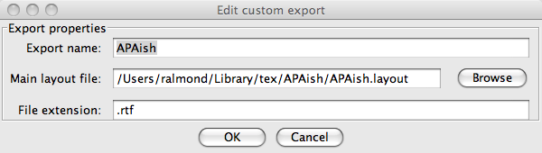

JabRef is an very nice program for managing bibtex bibliography databases. In addition to its use for managing and editing the .bib file, it also contains a number of export filters that can export the bibliography in a variety of styles. The export filter language is extensible, so that new styles can be added.
APAish represents my first effort at an export filter that follows the American Pychological Association (APA) guidelines, which are used by many journal and conference in the field of education. It exports the references in Rich Text Format (rtf) which is understood by a large variety of text editors (including Microsoft Word).
Actually, my long term goal is really to produce an export filter that is compatable with Erik Meijer's excellent bibtex style apacite. In particular, the goal is to have the RTF export filter look very close to the pdf generated when the bibliography is formatted with bibtex and apacite. There are still things to be done to reach that goal.
Options > Manage
Custom Exports
.rtf. The result should look something
like this.

File >
Export from the menu. APAish should now appear as one of
the choices.
This is version 0.2, an early beta release of APAish. There are a number of known issues, some of which are related to missing features in JabRef (I've posted a couple of feature requests, I may try to add them myself later if I get time). At any rate here are a few extra and missing features.
lastchecked and url
optional bibtex fields, adding a line of the
form Retrieved lastchecked from url. to
the entry if url is present.
doi field for articles and
the isbn field for books.
address field for the
publisher of books. <flame>Adding the physical
address of a publisher to a bibliography entry is an antemillenial
practice that wastes valuable space in the
paper.</flame>
RTFChars filter in JabRef.] It also does not
conver a single dash in a pages entry to an en-dash the way bibtex
does.
(ed.)). [I think a new kind
of filter is needed in JabRef to accomplish this.] It also
use pp. when there is only a single page.
type field when not supplied by the entry. APAish
does not do this. [Again, I think a new kind of filter is needed to
support this.]
magazine, newspaper, lecture
or intechreport entry types. The default layout will
probably not work very well for these
types. The misc, booklet, manual,
unpublished
and proceedings types also do not have custom filters,
but should work reasonably well with the default filter.
I would like to hear about any problems that are not noted above. Patches are also welcome.
Last modified: Sat Sep 26, 2009